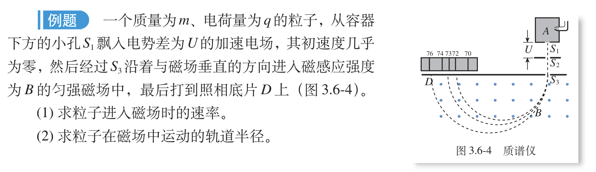
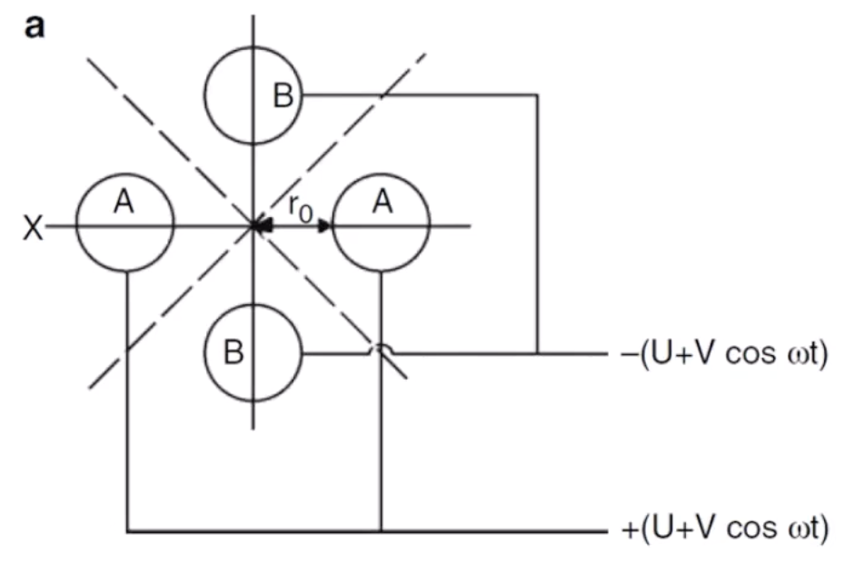

前言
我们在高中就已经完全掌握了质谱的基本物理学原理，为了高考，相关的例题更是做了数不胜数，让我们来回忆一下课本上经典的一道例题：

质谱的核心目的就是通过比荷得到样品分子的相对分子质量。质谱有很多种方法，但原理步骤都是一样的：
- 纯样品的注入与汽化（真空条件下）
- 样品分子离子化，导致样品分子裂解
- 加速，从而分离碎片
- 碎片的检测
分子离子化
分子是中性的，而质谱依赖比荷的物理原理，因此我们在这一步的目的是使中性分子带上电。我们有不同的方法来进行样品分子电离：
电子电离法（EI, Elctron Ionization）
我们通过电子枪（发射电子的东西），射出高速电子，高速电子有概率击飞我们样品分子中的电子，从而使我们分子带正电荷，因为样品分子的电子被击飞，此时样品分子出现了未配对电子，形成自由基，例如：$$\text{CH}_4 + \text{e}^- \rightarrow \text{CH}_4^{\bullet+} + 2\text{e}^-$$
在这里一定不要忘了高中化学；离子和自由基的区别：氢氧根离子（$\text{OH}^-$）中氧元素的电子排布为$1s^2 \ 2s^2 \ 2p^6$，羟基自由基（$\text{OH}^\bullet$）中氧元素的电子排布为$1s^2 \ 2s^2 \ 2p^5$。判断自由基的核心是观察是否有未配对的电子。另外，自由基也可以带电，例如本文例子。
对于复杂分子，例如正戊烷，电子会打到不同的原子上，造成分子碎裂成不同的小块，每一个小块都有不同的丰度。
对于很小的分子，EI 会完全把样品轰碎，所以我们会采用其它离子化技术，相较于其它电离技术，EI 也叫做硬电离。
化学电离法（CI, Chemical Ionization）
CI 先是通过 EI 电离一些简单分子（例如氨气、甲烷）： $$\text{CH}_4 + \text{e}^- \rightarrow \text{CH}_4^{\bullet+} + 2\text{e}^-$$ $$\text{CH}_4 + \text{CH}_4^{\bullet+} \rightarrow \text{CH}_3^{\bullet} + \text{CH}_5^{+}$$
电离后形成的 $\text{CH}_5^{+}$ 是一种气态极强酸，逢人就给质子，因此我们的样品（习惯记为 M）可以获得一个质子形成阳离子： $$\text{M} + \text{CH}_5^{+} \rightarrow \text{MH}^{+} + \text{CH}_4$$
阳离子相较于自由基，它要稳定很多，但是会导致我们样品相对分子质量 +1。因为没有打碎样品分子，CI 是软电离技术的一种。
CI 相比 EI 少了碎片峰，谱图极度简化，主要只产生准分子离子峰，也可以直接打混合物质谱。但是，EI 的碎片峰区段因为不同分子有不同峰特征，可以构建数据库（NIST）进行作为指纹识别，关于读图解峰，我们会在另一个文章中讲解基础原理。
当然我们也可以使用色谱分离纯化再打质谱，也有解叠算法（反卷积 Deconvolution 算法）直接解析叠峰（解叠峰算法非常成熟强大，我们要感谢数学家）。
电喷雾电离法（ESI, Electrospray Ionization）
ESI 不要求我们汽化样品，而是直接使样品液体从带高压电的针头中高速喷出，样品分子会从溶剂中直接获得氢离子，形成 $\text{MH}^{+}$。
因为 ESI 不要求汽化样品，所以好多难以被汽化的样品都可以用 ESI，例如蛋白质。
离子/碎片分离
我们分析的核心就是质荷，但是我们有多种分离方式，每一种都可以出成一道高考题：
扇形磁分析器
这就是我们高中课本例题的原理，当加速后的离子流以速度 $v$ 进入垂直于运动方向的磁场 $B$ 时，会受到洛伦兹力作用做圆周运动： $$qvB = \frac{mv^2}{R}$$ $$R = \frac{mv}{qB}$$
扇形磁分析器的分辨率和质量准确度都很高，是早期质谱的分析基石。
时间/飞行速度分离
这也是经典的高中物理题，利用动能公式： $$E_k = \frac{1}{2}mv^2 = qU$$ $$v = \sqrt{\frac{2qU}{m}}$$
如果给所有离子相同的电场加速，它们将获得相同的动能 $E_k$。因为动能相同，轻的离子飞得快，重的离子飞得慢。离子在一根长长的无场管道里飞行，通过到达检测器的时间差来实现分离。
静电场/动电场空间分离：四极杆
四个平行的金属棒两两构建出两个交变电场，特定比荷的离子在这种振荡电场中能够保持稳定的轨道，穿过四极杆到达检测器；而非目的比荷的离子轨迹会越来越大，最终撞击在极杆上。
四极杆一次只允许一种质荷比的离子通过。速度快、成本低，非常适合配合色谱（如 GC-MS、LC-MS）进行定量分析。

其它
我们还有很多分离方式，例如离子阱、离子迁移谱，现在科技的发展人们已经把质谱玩的越来越复杂，但无论多么复杂，其背后的基本物理原理不变，只是各种电场磁场的排列组合。
参考视频
这个视频讲的非常好：